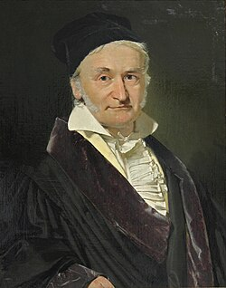
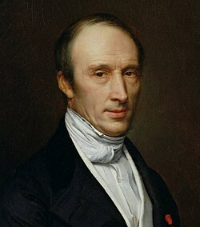

Dos mentes que redefinieron las matemáticas
Carl Friedrich Gauss (1777–1855) y Augustin-Louis Cauchy (1789–1857): uno midió la Tierra y el cielo con números; el otro enseñó al cálculo a demostrar lo que afirma.
Entre el dato medido y la prueba rigurosa se levanta casi toda la ciencia moderna.


Carl Friedrich Gauss
Biografía
Gauss nació el 30 de abril de 1777 en Brunswick (Braunschweig), en el Sacro Imperio Romano Germánico, en una familia humilde. Desde niño destacó por su cálculo mental; el Duque de Brunswick financió después sus estudios. Estudió en el Collegium Carolinum y, desde 1795, en la Universidad de Göttingen. Su época fue la del final de la Ilustración, las guerras napoleónicas y el auge de la ciencia académica alemana.
En 1801 publicó Disquisitiones Arithmeticae, y ese mismo año su cálculo de la órbita de Ceres lo hizo famoso. Dirigió el observatorio de Göttingen, hizo trabajos de geodesia (triangulación del Reino de Hannover) y estudió magnetismo con Wilhelm Weber. Murió en Göttingen el 23 de febrero de 1855.
Línea de tiempo
Aportes matemáticos
Teoría de números y aritmética modular
Dos números son congruentes módulo n si dejan el mismo resto al dividirse entre n: \(a \equiv b \pmod n\). Es la «aritmética del reloj»: 15 h equivale a 3 h módulo 12. Gauss introdujo esta notación en Disquisitiones Arithmeticae y demostró la ley de reciprocidad cuadrática, que relaciona cuándo \(p\) es un cuadrado módulo \(q\) y viceversa; dio varias demostraciones a lo largo de su vida. Hoy la aritmética modular sustenta la criptografía y los códigos de verificación.
Mínimos cuadrados
Dado un conjunto de mediciones con error, ¿qué recta (o curva) se ajusta mejor? El método elige los parámetros que minimizan la suma de los cuadrados de los residuos: \(\min \sum (y_i-\hat y_i)^2\). Legendre lo publicó primero (1805); Gauss afirmó usarlo desde 1795 y lo justificó con probabilidad en 1809. Se usa en estadística, ingeniería, física y ciencia de datos.
Distribución normal (gaussiana)
Describe variables cuyos valores se agrupan alrededor de una media \(\mu\) con dispersión medida por la desviación estándar \(\sigma\): \(f(x)=\frac{1}{\sigma\sqrt{2\pi}}e^{-\frac{(x-\mu)^2}{2\sigma^2}}\). Su gráfica es la curva de campana; aprox. 68 % de los datos queda a una desviación de la media. Gauss la usó para modelar errores de medición y fue decisivo en su difusión, pero no fue el único precursor: antes la empleó De Moivre y luego Laplace la desarrolló.
Geodesia y superficies curvas
Gauss dirigió la medición geodésica del Reino de Hannover, con triangulación y mínimos cuadrados para compensar errores. Su estudio de superficies mostró que la curvatura puede medirse desde dentro de la superficie, base de la geometría diferencial y relevante para cartografía: no se puede aplanar una esfera sin deformarla.
Astronomía
Tras perderse Ceres detrás del Sol, Gauss calculó su trayectoria a partir de pocas posiciones; el planeta fue reencontrado aproximadamente donde predijo. Su método de determinación de órbitas apareció en Theoria motus (1809).
Ejercicios interactivos
A. Aritmética modular
Calcula \(17 \bmod 5\): ¿qué resto deja 17 al dividirlo entre 5?
Prueba otros valores:
modB. Mínimos cuadrados
Edita los valores de y y observa la recta \(\hat y = a + bx\).
Augustin-Louis Cauchy
Biografía
Cauchy nació en París el 21 de agosto de 1789, semanas después de la toma de la Bastilla. Su padre, funcionario, protegió a la familia durante el Terror; en esa época trataron con Laplace y Lagrange, quienes influyeron en su formación. Ingresó a la École Polytechnique en 1805 y luego a la École des Ponts et Chaussées. Trabajó como ingeniero en Cherbourg (1810) antes de dedicarse a las matemáticas.
Fue profesor en la École Polytechnique, la Sorbona y el Collège de France. En su Cours d'analyse (1821) fundamentó el cálculo sobre límites. Era monárquico y católico convencido; tras la Revolución de 1830 se exilió y regresó a Francia en 1838. Murió en Sceaux el 23 de mayo de 1857. Publicó cerca de 800 trabajos.
Línea de tiempo
Aportes matemáticos
Límites
\(\lim_{x\to a} f(x)=L\) significa que \(f(x)\) se acerca a \(L\) tanto como se quiera con tal de que \(x\) esté suficientemente cerca de \(a\) (sin importar el valor en \(a\) mismo). Sobre este concepto se definen derivadas e integrales.
Continuidad
\(f\) es continua en \(a\) si \(\lim_{x\to a} f(x)=f(a)\). Gráficamente: se puede trazar sin levantar el lápiz. Cauchy dio la definición en términos de que un cambio infinitamente pequeño de \(x\) produce un cambio infinitamente pequeño de \(f\); la formulación con \(\varepsilon\)–\(\delta\) se asocia después a Weierstrass.
Convergencia de sucesiones y series
Una sucesión converge si sus términos se acercan a un valor límite: \(1/n \to 0\) converge, \((-1)^n\) y \(n\) no. Criterio de Cauchy: una sucesión de reales converge si y solo si para todo \(\varepsilon>0\) existe \(N\) tal que \(|a_m-a_n|<\varepsilon\) para todo \(m,n\ge N\). Permite probar convergencia sin conocer el límite.
Rigor en el análisis
En Cours d'analyse y Leçons, Cauchy reemplazó argumentos geométricos e intuitivos por definiciones y demostraciones basadas en límites. Fue un paso decisivo hacia el análisis moderno, aunque su tratamiento no estuvo libre de imprecisiones que se corrigieron después.
Análisis complejo
Cauchy desarrolló la integración de funciones de variable compleja. El teorema integral de Cauchy: si \(f\) es holomorfa en una región simplemente conexa, \(\oint_\gamma f(z)\,dz=0\) para todo contorno cerrado \(\gamma\) en ella. De él se derivan la fórmula integral de Cauchy y el teorema de los residuos.
Ejercicios interactivos
A. Límites
Resuelve \(\lim_{x\to 2}\dfrac{x^2-4}{x-2}\).
B. Sucesión \(a_n = 1/n\)
Converge a 0 porque para cualquier \(\varepsilon>0\), basta \(n>1/\varepsilon\) para tener \(1/n<\varepsilon\).
C. Criterio de Cauchy
Gauss y Cauchy: enfoques que se complementan
No compiten: Gauss trabajó sobre todo desde los números, los datos y las superficies; Cauchy, desde los fundamentos del análisis. Elige un campo:
Mientras Gauss mostró cómo extraer conocimiento fiable de mediciones imperfectas, Cauchy proporcionó el lenguaje de límites y convergencia que da sentido preciso a esos métodos. Las matemáticas modernas necesitan ambos: modelos aplicables y bases rigurosas.
Impacto en la actualidad
Los siguientes usos son conexiones conceptuales: ni Gauss ni Cauchy conocieron estas tecnologías.
Herencia de Gauss
- Estadística y análisis de datos: distribución normal, estimación de errores.
- Aprendizaje automático: regresión por mínimos cuadrados, modelos y mezclas gaussianas.
- GPS y geodesia: los ajustes de posición usan mínimos cuadrados.
- Astronomía computacional: determinación de órbitas.
- Procesamiento de señales: filtros gaussianos.
- Optimización y regresión.
Herencia de Cauchy
- Análisis numérico: convergencia y error de los algoritmos.
- Simulación científica y modelado físico: se apoyan en el cálculo riguroso.
- Algoritmos iterativos: criterios de convergencia tipo Cauchy.
- Análisis complejo: integrales de contorno en física e ingeniería.
- Procesamiento de señales: transformadas y funciones analíticas.
Legado y curiosidades
Gauss
- Anécdota popular: de niño sumó 1 a 100 en pocos instantes con parejas que suman 101; su veracidad exacta es discutida.
- Pidió un heptadecágono en su lápida; el escultor se negó por parecer un círculo (relato tradicional). Hay uno en el monumento de Brunswick.
- Nombres: gauss (unidad de campo magnético), eliminación gaussiana, curvatura gaussiana, integral gaussiana, distribución gaussiana.
- Obras: Disquisitiones Arithmeticae, Theoria motus, Disquisitiones generales circa superficies curvas.
Cauchy
- Nombres: sucesión de Cauchy, criterio de Cauchy, teorema integral de Cauchy, desigualdad de Cauchy–Schwarz, ecuaciones de Cauchy–Riemann, distribución de Cauchy.
- Obras: Cours d'analyse (1821), Leçons sur le calcul différentiel (1829), Exercices de mathématiques.
- Su nombre figura entre los 72 inscritos en la Torre Eiffel.
- Fue un autor extraordinariamente prolífico: cerca de 800 artículos y libros.